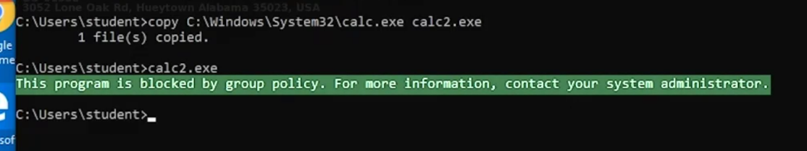

08- Application whitelist
Intro
- • • idea : block software run except those defined on a whitelist
- technique : Living off the land
- Microsoft applocker : introduced on windows 7
- available only on enterprise and utilate windows versions
- applocker categories
- executables
- msi files
- script powershell
- packaged app
- change rules via gpedit.msc (local group policy editor)
- enforce rules for each category
- deny by default
- default rules
- run only exes on c:\Program Files and c:\Program Files (x86) and c:\windows and subfolders
- enable admin to run any files they desire
- Example

Identify
Get-AppLockerPolicy -Effective | select -ExpandProperty RuleCollections